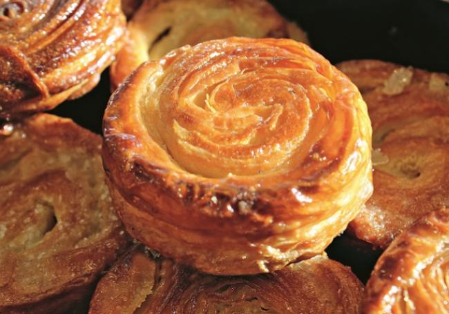
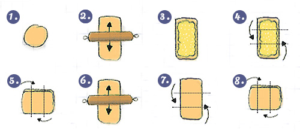

Kouign Amann
History of Kouign Amann

In Breton, Kouign Amann means "cake with butter", it is a regional specialty native of Douarnenez, located in the department of Finistère.
The most provable story is certainly that of Douarnenez baker, Yves-Rene Scordia, who would have made his Kouign Amann for the first time in 1860, by chance, in his bakery, a busy day, where he lacked cake at the stall. It should be known that that year, the butter was produced in abundance while the flour was missing, so the baker tried to make a bread dough with unusual proportions, which gave a bread dough "failed".
In order to avoid losing this dough, and to be able to satisfy customers who were impatient, Mr Scordia cooked it. This unusual mixture gave birth to this crispy little cake, with a good taste of butter and caramel, which met with immediate success in its bakery.
A little butter and sugar, for dessert, it's always the best:
Ingredients
- 250g of flour
- 200g of butter
- 200g caster sugar
- 10g fresh yeast
- 10 cl of water
- 2 pinches of salt
Preparation
- First of all, take the half-salted or salted butter * out of the refrigerator so that it softens.
- Start by making kouign-amann's dough: mix the fresh baker's yeast (especially no baking powder!) And 3 tablespoons of warm, non-hot water in a cup, then, in a bowl, mix the flour with Wheat and add 2 pinches of salt (be careful, salt and baker's yeast should not be in contact, this could kill the yeast and prevent your dough from swelling).
- Form a well and pour in your yeast mixture and 10 cl of water.
- Flour your worktop and work your kouign-amann paste until you get a soft dough.
- Let the dough rest in a bowl in the salad bowl at room temperature for 3 hours (step 1 of the diagram).
- After 3 hours of rest, the dough will have tripled in volume: on your floured work surface, using a rolling pin, lower the dough (this step can be quite long because the dough is relatively elastic) and give it a rectangular or square shape about 1 cm in height (step 2 of the diagram): spread the half-salt butter soft with a brush and sprinkle with powdered sugar. Take care not to spread the butter and sugar on the edges of the dough and leave a space of about 3 cm all around (step 3 of the diagram).
- Fold dough kouign-amann 3 in length (step 4 of the diagram) and again in 3 in width (step 5 of the diagram), in the manner of a puff pastry, the goal being to "imprison" butter and sugar.
- With your rolling pin, roll out the dough again very carefully, being careful that the butter does not come out (step 6 of the diagram).
- Fold the dough one more time in 3 in the length then in the width (step 7 and 8 of the diagram).
- Pack your dough into a buttered pan and let it rest for half an hour.
- With a knife, draw a grid on the dough and sprinkle a few more pieces of butter.
- Preheat the thermostat oven 7 (210 °).
- Then cook the kouign-amann for about 35 minutes.
- Once your kouign-amann is cooked, take it out of the oven and wait 15 minutes before removing the mold.
- Sprinkle your kouign-amann with a little caster sugar and enjoy it warm!
Tips from the chef:
* Following a comment from a user, I advise you to use butter with salt crystals of Guérande or coarse salt: large grains of salt tend to rip your dough during the display of butter making so avoid butter while cooking!
This recipe is very technical, I suggest you take a look at this small diagram below that will help you realize your kouign-amann and include a good understanding of the folding steps!
